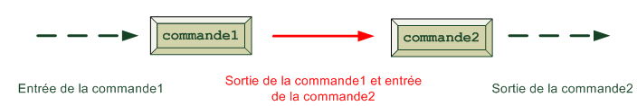

Extract, sort and filter data
Filter with grep
The role of grep is to look for a word in a text and to display the lines where it appears.
Simple examples
If you want to look for the word “alias” in the file “.bashrc”, type:
$ grep alias .bashrcIf you want to ignore the difference between non-capital letters and capital letters, use the option “i”:
$ grep -i alias .bashrcTo display the line numbers, use option “-n”:
$ grep -n alias .bashrcIf you want to display all the lines where a word is not present, use ‘-v’:
$ grep -v alias .bashrcFinally, to do a recursive research in a folder, use ‘-r’:
$ grep -r alias folderNameMore advanced examples: a mini introduction to regex
To do some accurate researches, you need to use regex: it is a set of symbols that tell to the computer exactly what you look for. The following table gives the main symbols and their meaning:
| Symbols | Meaning |
|---|---|
| . | Any character except |
| ^ | At the beginning |
| $ | At the end |
| [] | One character between the bracket |
| [^] | Forbidden characters |
| ? | Optional character (apply to the previoous one) |
| * | The previous character may be present 0,1, or many times |
| + | The previous character must be present 1 or many times |
| | | Or |
| () | Group of expressions |
| {n} | The previous character is present n times |
Let’s give some examples to illustrate this abstract table: first use option “-E” to indicate that you use regex.
$ grep -E ^Alias .bashrcmeans that you look for lines that begin with ‘Alias’.
$ grep -E [Aa]lias .bashrcmeans that you look for “Alias” or “alias”.
$ grep -E [0-4] .bashrcgives all the lines that contain a number between 0 and 4.
Exercise (intermediary). Write the following regexs:
- lines that contain two or too
- lines that contain copyright or right
- lines that contain 3 vowels
Exercise (difficult). Write the following regexs:
- Write a regexp that validates if an email adress is correct or not.
- Write a regexp that captures phone numbers with the format (xxx) xxx-xxxx or xxx-xxx-xxxx.
Sort the files
The command sort sorts by alphabetical order:
$ sort testFileThe result is only displayed on the terminal. To write the result on a file, use option “-o”:
$ sort -o sortFile fileTestTo sort numbers use option ‘-n’.
Count line numbers with wc
To count the number of lines, use ‘l’:
$ wc -l testFileFor the number of words, use ‘-w’:
$ wc -w testFileFor the number of characters, use ‘-m’:
$ wc -m testFileCut a part of a file cut
The command cut enables to preserve only a part of each line. Let’s say that we have already a file marks.csv with a column of name, marks and appreciations. Basically, you can cut according to the number of characters. If you want to preserve only the characters from 2 to 4, type:
$ cut -c 2-4 marks.csvBut if you want to extract only the names, you can not do this if all the names have not the same length. We use the fact that the file is a csv (Comma separated value) that is to say each column is separeted by a comma. The following command does exactly what you want:
$ cut -d , -f 1 marks.csvLet’s detail the options:
- ‘-d’ indicates the delimiter (here the comma)
- ‘-f’ indicates the column to preservex
Streams (important)
For each command we have seen earlier, the result is displayed on the terminal. But you can send the result to another output: in a file or as the input of another command (command pipeline). This is performed using special symbols like ‘>’, ‘>>’ or ‘|’.
Outputs using > and >>
These symbols enable to write the result of a command in a file, instead of the terminal.
Let’s first begin with >. Let’s illustrate with the file “marks.csv” and we write the result of cut in another file.
$ cut -d , -f 1 marks.csv > names.txt>> redirects at the end of the file (so your file is not cleaned):
$ cut -d , -f 1 marks.csv >> names.txtReally, each command produce two streams: the standard output (with everything except the error) and the error output. Imagine that you try to cut a file that does not exist:
$ cut -d , -f 1 fileNotExist.csv > names.txtThe error message appears in the terminal. To redirect this message, use 2>:
$ cut -d , -f 1 fileNotExist.csv > names.txt 2> errors.logIf you want to merge the two outputs, it is possible with:
$ cut -d , -f 1 fileNotExist.csv > names.txt 2>&1 errors.logChaining of commands
Let’s chain up commands with the pipe | symbol. This means that the output of a previous command is the entrance of the new command:

Let’s say that you want to sort the names of the file “marks.csv”, you can combine cut with sort and write the result in the file “sortNames.txt”:
$ cut -d , -f 1 marks.csv | sort > sortNames.txtIf you want to know all the folders sorted by their size and display only the most voluminuous:
$ du | sort -nr | headExercise: display only the names of the file containing the word “log” in the folder “/var/log”, sort these names and eliminate the duplicates.